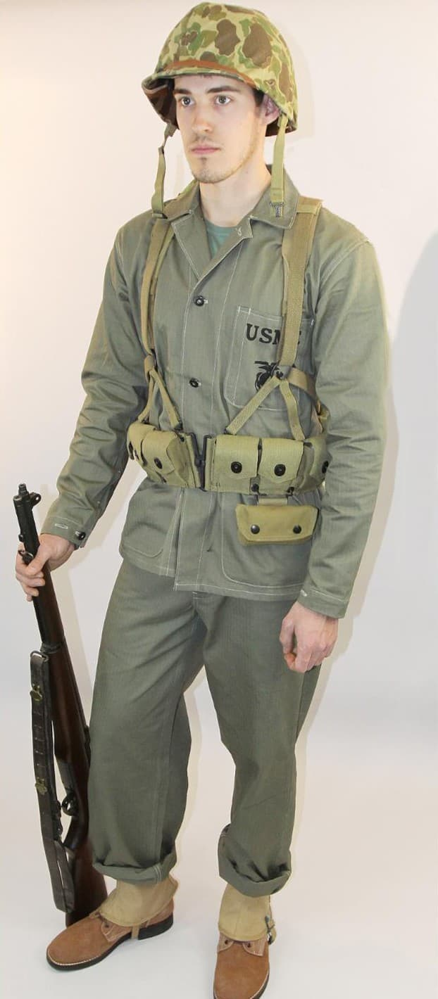
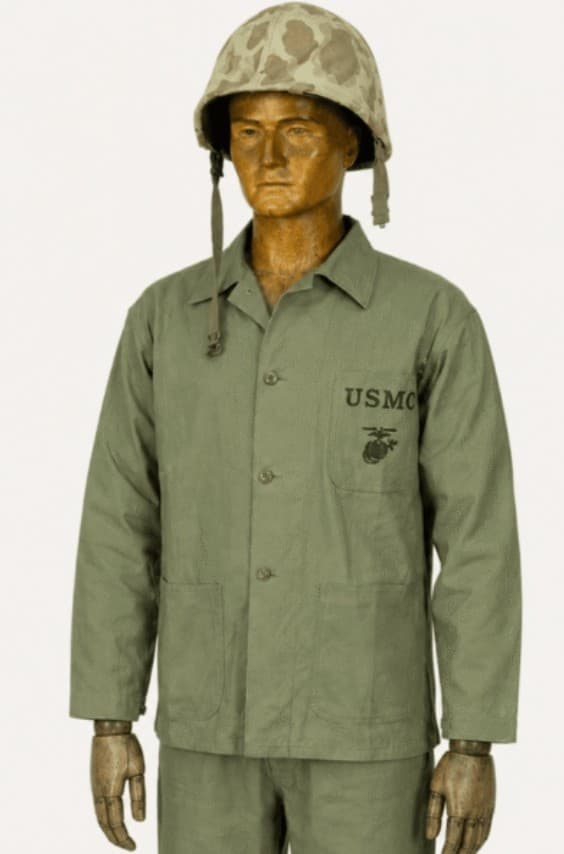

Le Corps des Marines des États-Unis (USMC) combat sur l’ensemble du théâtre du Pacifique durant la Seconde Guerre mondiale : Guadalcanal, Tarawa, Saipan, Peleliu, Iwo Jima, Okinawa. Leur uniforme spécifique, conçu pour les environnements tropicaux, est devenu l’un des plus emblématiques du conflit.
Robuste, camouflé et adapté à la chaleur, l’uniforme USMC se distingue nettement de celui de l’US Army. Il reflète les conditions extrêmes du Pacifique : humidité, boue, chaleur, végétation dense et combats rapprochés.
L’uniforme USMC se compose principalement de la tenue P42 puis P44, fabriquées dans un tissu épais vert forêt, parfois camouflé “frog skin”. Les Marines utilisent également des équipements spécifiques : guêtres, casques peints en vert foncé, musettes USMC, et divers accessoires adaptés au climat tropical.
Le camouflage “frog skin”, introduit en 1942, est l’un des motifs les plus reconnaissables du Pacifique, utilisé sur les vestes, pantalons, couvre-casques et équipements.


Les Marines sont engagés dans les combats les plus violents du Pacifique. Leur uniforme doit résister à la jungle, aux plages volcaniques, aux rochers coralliens et aux conditions extrêmes. Le camouflage “frog skin” est utilisé pour les opérations amphibies et les environnements tropicaux.
L’uniforme USMC devient un symbole de la guerre du Pacifique, associé aux batailles d’Iwo Jima, Tarawa et Peleliu. Il reste aujourd’hui l’un des uniformes les plus recherchés par les collectionneurs.